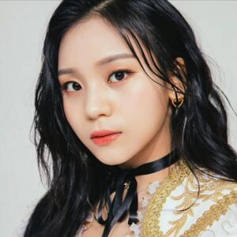
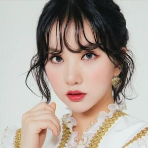
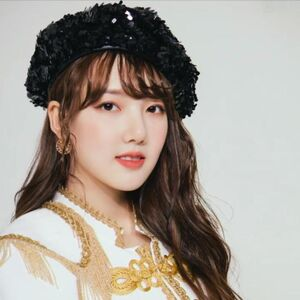
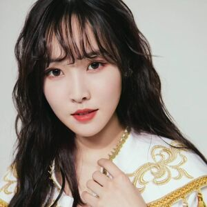

Nuestro Equipo
SOWON
- Nombre: 소원 / So Won
- Nombre real: 김소정 / Kim So Jung
- Apodos: Sofrodita, SoWonderful, Long Leg Goddess, Fairy Godmother, Future SouMu's CEO
- Profesión: Cantante, Bailarina, Rapera, Modelo, MC
- Fecha de nacimiento: 07-Diciembre-1995 (25 Años)
- Lugar de nacimiento: Seúl, Corea del Sur
- Estatura: 172 cm
- Peso: 50 kg
- Tipo de sangre: A
- Signo zodiacal: Sagitario
- Signo zodiacal chino: Jabalí
- Familia: Madre (Kim Hyo Joo) y hermana mayor (Kim So Hee)
-
Agencia: Source Music (Corea del Sur)
- Sub-agencia: Big Hit Entertainment

UMJI
- Nombre: 엄지 / Um Ji
- Nombre real: 김예원 / Kim Ye Won
- Apodos: Pretty Aegyo, Baby Cute, Maknae Cute, Baby Goblin, Omuji, Umji Baby
- Profesión: Cantante, bailarina y rapera
- Fecha de nacimiento: 19-Agosto-1998 (22 Años)
- Lugar de nacimiento: Incheon, Corea del Sur
- Estatura: 164 cm
- Peso: 49 kg
- Tipo de sangre: O
- Signo zodiacal: Leo
- Signo zodiacal chino: Tigre
- Familia: Padres, hermano y hermana mayores
-
Agencia: Source Music (Corea del Sur)
- Sub-agencia: Big Hit Entertainment

EUNHA
- Nombre: 은하 / Eun Ha
- Nombre real: 정은비 / Jung Eun Bi
- Apodos: Bunny, Galaxy, Pocket Girl, Mental Maknae
- Profesión: Cantante, Bailarina, Actriz
- Fecha de nacimiento: 30-Mayo-1997 (23 Años)
- Lugar de nacimiento: Seúl, Corea del Sur
- Estatura: 163 cm
- Peso: 45 kg
- Tipo de sangre: O
- Signo zodiacal: Géminis
- Signo zodiacal chino: Buey
- Familia: Padres, hermana y hermano mayor
-
Agencia: Source Music (Corea del Sur)
- Sub-agencia: Big Hit Entertainment

YERIN
- Nombre: 예린 / Ye Rin
- Nombre real: 정예린 / Jung Ye Rin
- Apodos: Red Ginseng, RinRin, Rinnie, Yennie, Doll-rin.
- Profesión: Cantante, Bailarina, Modelo, Actriz y MC.
- Fecha de nacimiento: 19-Agosto-1996 (24 Años)
- Lugar de nacimiento: Incheon, Corea del Sur.
- Estatura: 168 cm
- Peso: 49 kg
- Tipo de sangre: O
- Signo zodiacal: Leo
- Signo zodiacal chino: Rata
- Familia: Padres y hermano mayor
-
Agencia: Source Music (Corea del Sur)
- Sub-agencia: Big Hit Entertainment

SINB
- Nombre: 신비 / SinB
- Nombre real: 황은비 / Hwang Eun Bi
- Apodos: GoddessB, Princess Hwang, QueenB, Hwang Eunbi oppa, Beauty Sinb, Meme Queen, Baby Jessica
- Profesión: Cantante, Rapera, Bailarina y MC
- Fecha de nacimiento: 03-Junio-1998 (22 Años)
- Lugar de nacimiento: Cheongju, Chungcheongbuk-do, Corea del Sur
- Estatura: 167 cm
- Peso: 47 kg
- Tipo de sangre: AB
- Signo zodiacal: Géminis
- Signo zodiacal chino: Tigre
- Familia: Padres, hermano y hermanas mayores.
-
Agencia: Source Music (Corea del Sur)
- Sub-agencia: Big Hit Entertainment

YUJU
- Nombre: 유주 / Yu Ju
- Nombre real: 최유나 / Choi Yu Na
- Apodos: Ddidoli, Wuju, Yeo Jel Yi, Yujurgini, Yusain Bolt.
- Profesión: Modelo, Cantante, MC y Bailarina.
- Fecha de nacimiento: 04-Octubre-1997 (23 Años)
- Lugar de nacimiento: Ilsanseo, Goyang, Corea del Sur
- Estatura:169 cm
- Peso: 47 kg
- Tipo de sangre: B
- Signo zodiacal: Libra
- Signo zodiacal chino: Buey
- Familia: Padres y hermana mayor.
-
Agencia: Source Music (Corea del Sur)
- Sub-agencia: Big Hit Entertainment